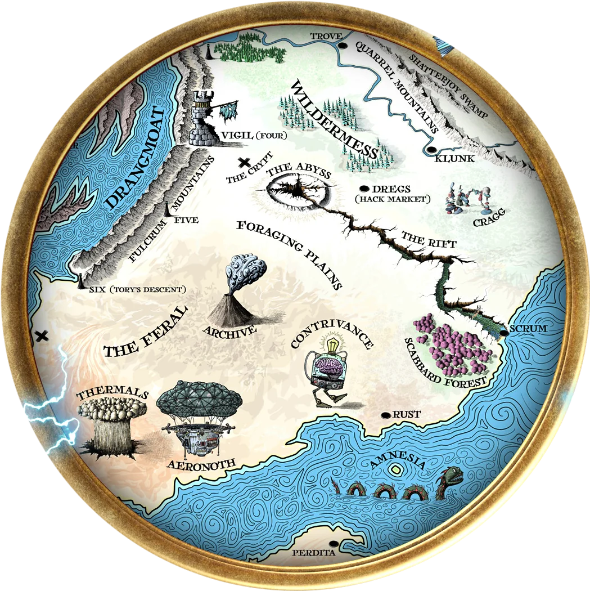
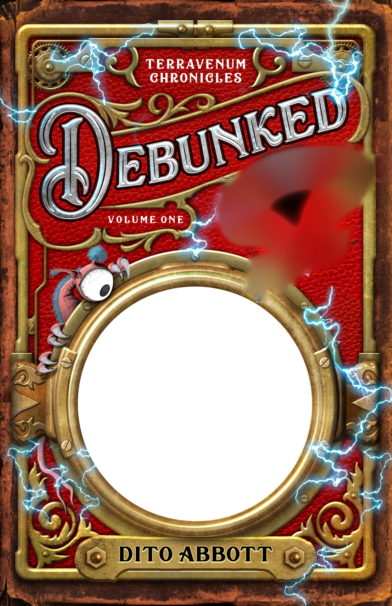
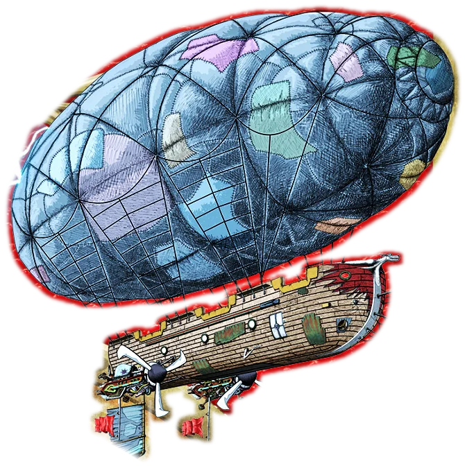
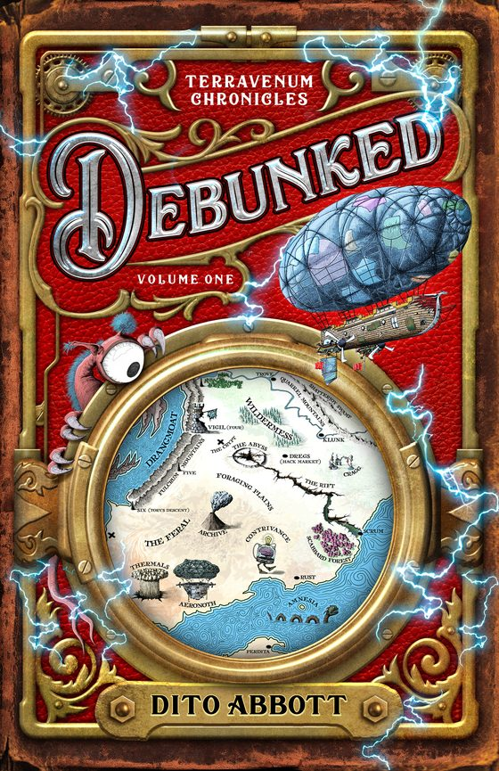
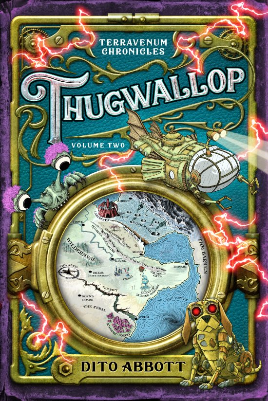
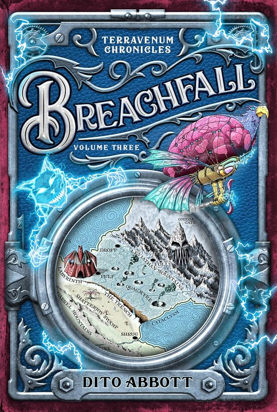
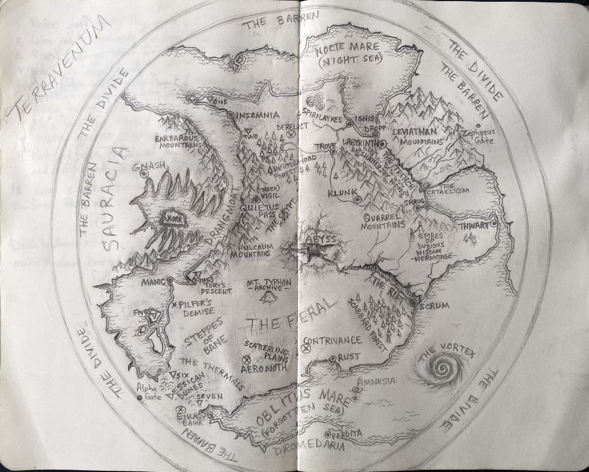
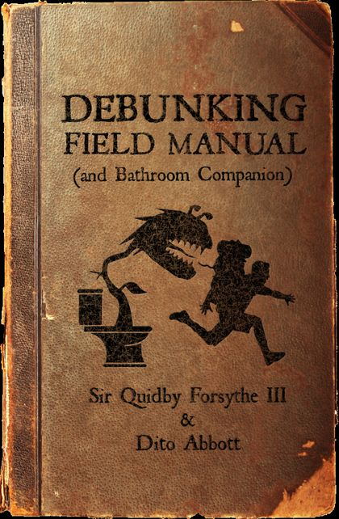
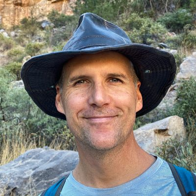

Terravenum Chronicles · Volume One
Debunked
Grandfather has died six times in two years. That has to be a record.



“Dearest Alexandria and Ozymandias,
If you are reading this, I have perished. My demise likely involved some manner of spiked pit or curiously fanged beast, so it’s doubtful I suffered long. Do not try to find me. The path is too perilous, and I am lost to the mortal plane.”
Sir Quidby Forsythe III
When Alex and Ozzie read their grandfather’s latest “death” letter, they barely blink. Dying six times in two years has to be a record, even for an explorer as incompetent as Sir Quidby Forsythe III.
Faster than you can say “kidnapped by a giant, glowing lizard”, the Forsythe twins are dragged into a world of ancient prophecies, sarcastic swords of legend, mutant slime beasts, and a growing awareness their grandfather might be the greatest explorer in history.
With Skhaar the Annihilator hot on their trail, Ozzie and Alex must solve the mystery of Sir Quidby’s disappearance before they become the final victims of the Forsythe Curse.
The Terravenum Chronicles
Airships, secret temples, and fang-ridden creatures (with extra ooze).

Debunked
Sometimes adventure knocks. Other times, it kicks the door in.

Thugwallop
Sometimes adventure knocks. Other times, it hurls woodland creatures at your airship. Good thing Grandfather brought his cricket bat.

Breachfall New
Volume three, out 13 October 2026. The glossary is up on my site, if you don’t mind spoilers.

Terravenum, in pencil
My original pencil sketch of the world: the Barren and the Divide round the edge, the Feral and the Abyss in the middle, Oblitus Mare to the south.

“A feast of balderdash, seasoned with lies.”Lord Pilligree Merocet, on the Debunking Field ManualRead the Field Manual

Dito (dee-toe), rhymes with Cheetoh
Born in Puerto Rico, raised in Saudi Arabia, mostly at sea
I sailed around the world with my family by the age of twenty-seven, and wrote Debunked over the course of a voyage from Florida to Mexico, with stops in Panama and the Galápagos.
I write novels because the alternative (building a trans-dimensional portal) is highly math-intensive and risks opening doors to timelines where pizza does not exist. I just try to write stories that would have blown my mind when I was twelve. Hence the airships.
Sir Terry Pratchett will always have my heart.
Expedition log
Come and find the airships at my table.
- Sep 26Tamariki Book FestivalArts Centre Great Hall, Christchurch
- Sep 27Ōtautahi MadeTe Pae, Christchurch
- Oct 23 to 26Armageddon ExpoAuckland Showgrounds
- Nov 13 to 15Fountain Hills Craft FestivalArizona
- Nov 27 to 28Holiday MarketArizona Athletic Grounds, Mesa
- Dec 3 to 5Dragonsteel NexusSalt Lake City, Utah
Signed copies by post
Missed me at a con? I’ll sign one and send it.
- Debunked, paperback
$24.99US$19.99 - Thugwallop, paperback
$24.99US$19.99 - Volumes 1 and 2 bundle
$49.99US$39.99
In New Zealand or Australia? Email me for print books.